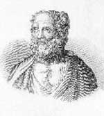

Politikacı “Adaletli” Aristides (MÖ 530-468) eski Atina’da büyük bir üne sahipti. Rüşvet almayı, halkın parasını çalmayı ya da yakınlarını kayırmayı reddetmiştir. MÖ 490 yılındaki Marathon Savaşı’nda başarılı bir generaldi. Zaferleriyle hiçbir zaman övünmemiştir. Çağdaşlarının biri onu Atina’nın en “değerli” adamı diye adlandırmaktadır.

Aristides gerçekten de o kadar ahlaklıydı ki hemşehrileri arasında onu sevmeyen birçok kişi vardı. MÖ 482’de yapılan bir oylamada şehirden sürülmesine karar verilmişti. Kovulması lehinde oy kullanan bir Atinalı: “Ben onu şahsen tanımam. Ama her yerde onun adını duymaktan, ondan ‘Adil adam’ diye bahsedilmesinden bıktım usandım,” demiştir. (Aristides’in Atina filosunun genişletilmesine karşı çıkmasının da kovulmasında rol oynadığı tahmin edilmektedir).
Aristides’in sürgün kararı bir süre sonra pişmanlığa neden olmuştur. Sürgüne gönderilmesinden iki yıl sonra Persliler yeniden Yunanistan’ı işgal ettiler. Thermopylae Savaşı’nda Yunanlılar’ı yenmiş ve görünüşe göre bölgenin tamamını ele geçirmeye yemin etmişlerdi. Bu durum karşısında Atinalılar, Aristides’e geri dönüp şehrin savunmasını organize etmesi için yalvarmak zorunda kaldılar.
İki yıl önce Aristides’in kovulması için kampanya başlatanların arasında yer alan politikacı Themistocles’le (MÖ 524-460) birlikte Persler’e karşı mücadele etmek için kurulmuş olan ve Yunan şehir devletlerinden oluşan birliğin komutasını ele aldı. Salamis Savaşı’nda (MÖ 480) Pers donanmasını yenilgiye uğrattılar. Sonraki yıl ise Platea Savaşı’nda kara ordularını yendiler. Bu zafer Pers istilasının sonu oldu.
Savaştan sonra Yunan birliği bozulmaya başladığında, Sparta’nın aksine Atina’nın lider Yunan şehri olması için diplomatik bir çaba harcadı. Dürüstlüğüne borçlu olduğu ünü sayesinde diğer şehirlerin güvenini kazanmayı başardı. Aristides, MÖ 487 yılında kurulan ve Delian Ligi denen Atina liderliğindeki konfederasyonun mimarlarından biriydi.
Aristides’in hayatının geri kalanı hakkında pek az şey bilinmektedir. Politikaya dönmüş ve Plutarch’a (46-120) göre sefalet içinde ölmüştür. Zira politikayı kullanarak zenginleşmeyi kesin olarak reddetmiştir.
Ek Bilgiler
1- Plutarch’a göre Aristides ve Themistocles arasındaki düşmanlık kişiseldi. Her ikisi de Stesilaus adındaki bir genci seviyorlardı.
2- Aristides Pers Savaşları sırasında general anlamına gelen strategos unvanını aldı. Strateji kelimesi bu terimden türetilmiştir.
3- Delian Ligi, adını konfederasyonun hazinesinin saklandığı ve yıllık toplantılarının düzenlendiği Delos Adası’ndan alır. Her ne kadar eşitler arasındaki bir birlik olarak yola çıkılmış olsa da zamanla fiili olarak bir Atina imparatorluğu haline gelmiştir. Hazinesine, Pantheon’un inşasında kullanmak üzere Atina tarafından MÖ 454 yılında el konulmasının ardından, birlik son bulmuştur.